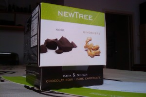
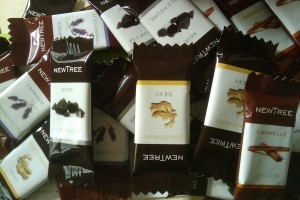

Por ejemplo, plantar un árbol justo delante de un semáforo.
Un, dos, tres, responda otra vez.
(Visto junto al Parc du Cinquantenaire)

El blog-guía escrito por españoles en Bruselas para los hispanoparlantes que viven aquí y para los turistas que aprovechan los vuelos baratos para descubrir el chocolate, la cerveza, la Grand Place y tantas otras cosas buenas.
Por ejemplo, plantar un árbol justo delante de un semáforo.
Un, dos, tres, responda otra vez.
(Visto junto al Parc du Cinquantenaire)
El KVS es el Koninklijke Vlaams Schouwburg, es decir, el Teatro Real Flamenco de Bruselas.

Pero no os mováis a engaño; este teatro nada tiene que ver con el cante jondo ni con los Pink Flamingos. Se trata de uno de los más hermosos teatros de Bruselas y lamentablemente, y como tantas cosas en esta ciudad, es un absoluto desconocido para muchos.
El KVS fue construido en 1880-1887, y su fachada principal se debe al arquitecto Jean Baes (1848-1914). Su estilo es el que aquí llaman “renaissance flamande”. Se trata de uno de los diferentes historicismos que se desarrollan en esos años en cada país europeo para recrear un supuesto estilo “nacional” reinterpretando la arquitectura de un período que se supone áulico. Un ejemplo del equivalente en España son las fachadas del primer tramo de la Gran Vía de Madrid, donde se pretende recrear la arquitectura bajo el reinado de Carlos V.

Foto: Mon Nikon et moi
Las terrazas laterales son las escaleras de incendios, avanzadísimas para la época.
El KVS sufrió una profunda remodelación hace poco tiempo (se empezó en 2001), y que le ha dado el magnífico interior de que hoy dispone, así como el edificio anejo, el Box, con una sala suplementaria y donde tienen lugar muy buenos saraos con ese gusto que sólo tienen los flamencos.
foto: KVS 
La sala principal es el Bol, la bola, por oposición al Box, la caja. Y es que el edificio antiguo se ha convertido en el envoltorio de una enorme esfera de hormigón, en cuyo interior se encuentran los palcos y el patio de butacas. El contraste entre la austeridad de las partes nuevas con la decoración abigarrada de las antiguas tiene especial encanto muy de Bruselas.
El teatro ocupa el lugar de un antiguo arsenal de artillería (1780-1781), del que se ha conservado la fachada principal de estilo neoclásico. Hoy es la fachada trasera del teatro, que da al Quai aux Pierres de Taille/Arduinkaai.

La programación del KVS es de las más interesantes de Bruselas. Casi todas las obras son en neerlandés, pero todas tienen sobretítulos en francés y en inglés. También hay obras bilingües o en inglés o en francés. Y no se reduce a teatro; también hay danza, conciertos, conferencias, lecturas…
Tienen una declarada política de apertura al cosmopolitismo de Bruselas y hacen verdaderos esfuerzos por hacer del teatro un lugar para todos.
Y finalmente, el bar del teatro, en el foyer, es la única zona que conserva la decoración original, y es sencillamente genial. El box cuenta con otro bar, el Café Congo, que tampoco está mal.

Foto: KVS
Por supuesto, no hay que olvidar tampoco el lado más lúdico, y es que el KVS también organiza fiestas en el espacio del BOX, fiestas con mucha clase y buena música electrónica. Se trata de los saraos BAL IN DE BOX , que se organizan regularmente.

foto: Peter Forret
Tomad nota de la próxima: viernes 16 de octubre
Programa:
*gran sala*
DJ NERO (Free The Funk, Suite, Poplife)
23h30
MADENSUYU – concierto en vivo (ver YouTube)
1h00
THE GLIMMERS presentan DISKO DRUNKARDS
>> los primeros 500 recibirán un CD gratis!!! (ver YouTube)
DJ BLACKJACK aka RAKESH (KVS, Charlatan,…)
*café congo*
TLP all night long (KVS, StuBru,…)
Entrada: 10 euros
Un lugar que hay que descubrir.
Existe una curiosa anécdota en torno a la fundación del edificio en 1887. El teatro fue construido por iniciativa del Ayuntamiento de Bruselas, y para invitar al rey Leopoldo II a la ceremonia de inauguración el burgomaestre (alcalde) se dirigió a él en estos términos: « J’aurai l’honneur, Sire, de vous souhaiter la bievenue en Flamand, dans le temple érigé pour l’art dramatique flamand » (Tendré el honor, Señor, de desearle la bienvenida en flamenco, en el templo dedicado al arte dramático flamenco), a lo que el rey respondió: « Mon cher bourgmestre, vous m’offrez là une bonne occasion pour vous répondre dans cette même langue nationale, en Flamand » (Mi querido alcalde, con ello me ofrece Vd. la ocasión de responderle en esa misma lengua nacional, en flamenco). Y así lo hizo, y aquella ceremonia (un 13 de octubre, día de san Eduardo) se convirtió en algo así como en un reconocimiento oficial de esta lengua, aunque todavía habría mucho camino por hacer. De hecho, se trataba de la primera vez en que un rey belga hablaba en neerlandés en una ceremonia oficial. El burgomaestre en cuestión era Charles Buls, quien puso por primera vez los carteles bilingües en las calles de Bruselas; los otros municipios lo hicieron después.
Parece que este blog va cogiendo prestigio 😉 Hoy he recibido por correo un paquetito la mar de mono (pero un pelín pequeño) de Newtree, en el que me hacen llegar un poco de chocolate por haberles citado en mi artículo sobre el mejor chocolate belga.


Se trata de una cajita que no conocía y que contiene veinte chocolatinas variadas, de chocolate negro y esa cosa que llaman chocolate con leche y que por suerte le gusta a mi chica. Se agradece la iniciativa que ha tenido el equipo de Newtree, y en especial de Olga su última adquisición. Todo un detalle para con un adicto necesitado 😉
Para escribir esta entrada he revisitado su página web, que ha cambiado bastante y promete, aunque deben estar de obras, porque la mitad de las páginas dan error.
En todo caso, las pastillas de chocolate están bien ricas y son muy convenientes para tener guardadas en el cajón con el material más importante del despacho, para poder echarles mano en cuanto flojée el intelecto. Eso sí, olvidaos de comer una y nada más: el tamaño es el justo para que te entre más gusa chocolatera. En lo que va de post me he zampado 4, y eso que tengo las manos ocupadas con el teclado.
Está claro que no se ha agotado aún la lista de chocolaterías de Bruselas, ni con todas las propuestas de Ramón y las de los comentarios, pero a mí me gustaría añadir mis dos preferidas.
En primer lugar está la chocolatería Mary.
Esta casa tiene una pomposa tienda en la rue Royale, frente a la Place du Congrès.
 Foto Beana DeeBee
Foto Beana DeeBee
Como Galler y Neuhaus, Mary es proveedor oficial de la Corte, pero parece que de entre los chocolateros reales es el preferido de nuestra querida Fabiola.
El local es un canto a la dinastía belga, los Sajonia-Coburgo, y merece realmente la visita. Ya no sé qué revista francesa incluye la tienda en una lista de lugares que hay que visitar al menos una vez en la vida. Las paredes están cubiertas de retratos de los reyes belgas, pero el conjunto se afea un tanto con la foto de la visita de Bush hijo y su señora.
Ya veréis que aquí no pretenden seducir con invenciones originales (si ves un turista por allí ayúdalo, se ha debido de perder), y que se limitan casi exclusivamente a los clásicos pralines, ¡pero son sencillamente exquisitos!
También más allá del Sablon y de la Grande-Place se encuentra mi otro chocolatero preferido: Frédéric Blondeel
 foto: cityplug.be
foto: cityplug.be
Blondeel cuenta con una gran ventaja, y es que se trata de una de las pocas chocolaterías (¿realmente hay otra?) donde se pueden probar los bombones con un buen café o mejor aún con su chocolate caliente. ¡Pero ojo! aunque está buenísimo no es nuestro chocolate espeso. Las cosas claras…

foto: An American in London
Lo que más me gusta de Blondeel son sus bombones de chocolate negro con especias: laurel, curry, pimienta, tomillo, espliego, romero… y qué sé yo qué más. Un nuevo mundo por descubrir.
A parte de estas dos chocolaterías, yo soy también fan de Manon, de que ha hablado ya Pablo el Flamenco. Está al ladito de Mary, entre la place du Congrès y la place la Liberté, y la señora que se ocupa de la tienda es encantadora.
Algo me dice que esto no es más que la guinda sobre el bombón, y que por Uccle y por los Wolluwé hay aún mucho chocolate por descubrir.
Hoy empieza el Festival de Verano de Bruselas, 10 días de música por el centro de la ciudad. Tres escenarios (Place des Palais, Parc de Bruxelles y Placé du Musée) y un montón de grupos, de los que os propongo una selección de videos para ver lo variadito que está el tema:
Tryo
Psy4 de la rime
Milow
David Cohen
Machiavel
Pep’s
La Grande Sophie
Vive la fête
http://www.youtube.com/watch?v=39k36lZ7axUTahiti 80
Este es el programa completo tal y como lo han publicado en su página en MySpace:
14 août 2009 19:00 La Casa – Place des Palais Bruxelles, Région de Bruxelles-Capitale
14 août 2009 20:00 Skye – Magic Mirror Bruxelles, Région de Bruxelles-Capitale
14 août 2009 20:30 Tryo – Place des Palais Bruxelles, Région de Bruxelles-Capitale
14 août 2009 21:30 Kris Dane – Magic Mirror Bruxelles, Région de Bruxelles-Capitale
15 août 2009 18:30 Scylla – Place du Musée Bruxelles, Région de Bruxelles-Capitale
15 août 2009 19:00 Jasper Erkens – Place des Palais Bruxelles, Région de Bruxelles-Capitale
15 août 2009 20:00 Jaune Toujours – Place du Musée Bruxelles, Région de Bruxelles-Capitale
15 août 2009 20:00 La Manouch’ Banda & Mandino Reinhardt – Magic Mirror Bruxelles, Région de Bruxelles-Capitale
15 août 2009 20:00 Electro Royal – Surfing Leons – Place des Palais Brussels, Région de Bruxelles-Capitale
15 août 2009 20:00 Electro Royal – Dj Orgasmic – Place des Palais Brussels, Région de Bruxelles-Capitale
15 août 2009 22:00 A Brand – Place du Musée Bruxelles, Région de Bruxelles-Capitale
15 août 2009 23:45 Electro Royal – Tom Barman – Place des Palais Brussels, Région de Bruxelles-Capitale
16 août 2009 18:30 Orfeo – Place du Musée Bruxelles, Région de Bruxelles-Capitale
16 août 2009 19:00 Royal HipHop – L’Algerino – Place des Palais Bruxelles, Région de Bruxelles-Capitale
16 août 2009 20:00 Royal HipHop – Ministère des Affaires Populaires – Place du Musée Bruxelles, Région de Bruxelles-Capitale
16 août 2009 20:00 Carte Blanche à Jacques Duvall – Magic Mirror Bruxelles, Région de Bruxelles-Capitale
16 août 2009 20:30 Royal HipHop – Psy 4 de la rime – Place des Palais Bruxelles, Région de Bruxelles-Capitale
16 août 2009 22:00 Pep’s – Place du Musée Bruxelles, Région de Bruxelles-Capitale
16 août 2009 22:30 IAM – Place des Palais Brussels, Région de Bruxelles-Capitale
17 août 2009 18:30 Freestage – Garner – Place des Musées Brussels, Région de Bruxelles-Capitale
17 août 2009 19:00 Manu Larrouy – Place des Palais Bruxelles, Région de Bruxelles-Capitale
17 août 2009 20:00 Madjo – Magic Mirror Bruxelles, Région de Bruxelles-Capitale
17 août 2009 20:00 Freestage – Un100 Cible – Place des Musées Bruxelles, Région de Bruxelles-Capitale
17 août 2009 20:00 Freestage – Kifmazique – Place des Musées Brussels, Région de Bruxelles-Capitale
17 août 2009 20:30 Cocoon – Place des Palais Bruxelles, Région de Bruxelles-Capitale
17 août 2009 21:30 Perry Rose – Magic Mirror Bruxelles, Région de Bruxelles-Capitale
17 août 2009 22:00 Freestage – Dashbox – Place des Musées Brussels, Région de Bruxelles-Capitale
17 août 2009 22:30 Milow – Place des Palais Bruxelles, Région de Bruxelles-Capitale
18 août 2009 20:00 Stéphanie Blanchoud – Place du Musée Bruxelles, Région de Bruxelles-Capitale
18 août 2009 20:00 Cécile Broché et Etienne Bouyer Duo- Magic Mirror Bruxelles, Région de Bruxelles-Capitale
18 août 2009 20:00 Veence Hanao – Place des Musées Brussels, Région de Bruxelles-Capitale
18 août 2009 21:30 David Linx & Diederik Wissels Duo – Magic Mirror Bruxelles, Région de Bruxelles-Capitale
19 août 2009 18:30 Freestage – Teme Tan – Place des Musées Brussels, Région de Bruxelles-Capitale
19 août 2009 20:00 Freestage – Gary Moonboots – Place des Musées Brussels, Région de Bruxelles-Capitale
19 août 2009 20:00 As Guests – Magic Mirror Bruxelles, Région de Bruxelles-Capitale
19 août 2009 21:30 Philip Catherine “AcousticTrio” – Magic Mirror Bruxelles, Région de Bruxelles-Capitale
19 août 2009 21:30 Freestage – The Hollograms – Place des Musées Brussels, Région de Bruxelles-Capitale
20 août 2009 18:00 Freestage – Rezolution Prod DJ Stito_DJ Check – Place des Musées Bruxelles, Région de Bruxelles-Capitale
20 août 2009 18:30 Freestage – La Fréquence – Place des Musées Bruxelles, Région de Bruxelles-Capitale
20 août 2009 20:00 Freestage – Le Rezo – Place des Musées Bruxelles, Région de Bruxelles-Capitale
20 août 2009 20:00 Jacques Stotzem – Magic Mirror Bruxelles, Région de Bruxelles-Capitale
20 août 2009 21:30 Machiavel – Magic Mirror Bruxelles, Région de Bruxelles-Capitale
20 août 2009 21:30 Freestage – Un100 Cible – Place des Musées Brussels, Région de Bruxelles-Capitale
21 août 2009 18:30 Kaponz & Spinoza – Place du Musée Bruxelles, Région de Bruxelles-Capitale
21 août 2009 20:00 Hulkk – Place du Musée Bruxelles, Région de Bruxelles-Capitale
21 août 2009 20:00 Triggerfinger – Place du Musée Bruxelles, Région de Bruxelles-Capitale
21 août 2009 20:00 Claire Denamur, Zoé, Les Sea Girls – Magic Mirror Bruxelles, Région de Bruxelles-Capitale
22 août 2009 18:30 BaliMurphy – Place du Musée Bruxelles, Région de Bruxelles-Capitale
22 août 2009 20:00 Jeronimo – Place du Musée Bruxelles, Région de Bruxelles-Capitale
22 août 2009 21:30 Coco Royal, Sea Girls – Magic Mirror Bruxelles, Région de Bruxelles-Capitale
22 août 2009 22:00 La Grande Sophie – Place du Musée Bruxelles, Région de Bruxelles-Capitale
23 août 2009 18:30 Yoko Sound – Place du Musée Bruxelles, Région de Bruxelles-Capitale
23 août 2009 20:00 Tahiti 80 – Place du Musée Bruxelles, Région de Bruxelles-Capitale
23 août 2009 20:00 Kel Assouf – Magic Mirror Bruxelles, Région de Bruxelles-Capitale
23 août 2009 21:30 Selah Sue – Magic Mirrors Bruxelles, Région de Bruxelles-Capitale
23 août 2009 22:00 Vive la Fête – Place du Musée Bruxelles, Région de Bruxelles-Capitale
Mis favoritos: Pep’s y Milow. Me intriga La Grande Sophie.
Además habrá diyeis para animar las fiestas y una velada en la cama estilo Sophie Calle en el Bozar.
Y todo por tan solo €20 el pase para el festival completo. Yo he tenido la suerte de que mi chica haya conseguido un par en un concurso de Pure FM 🙂